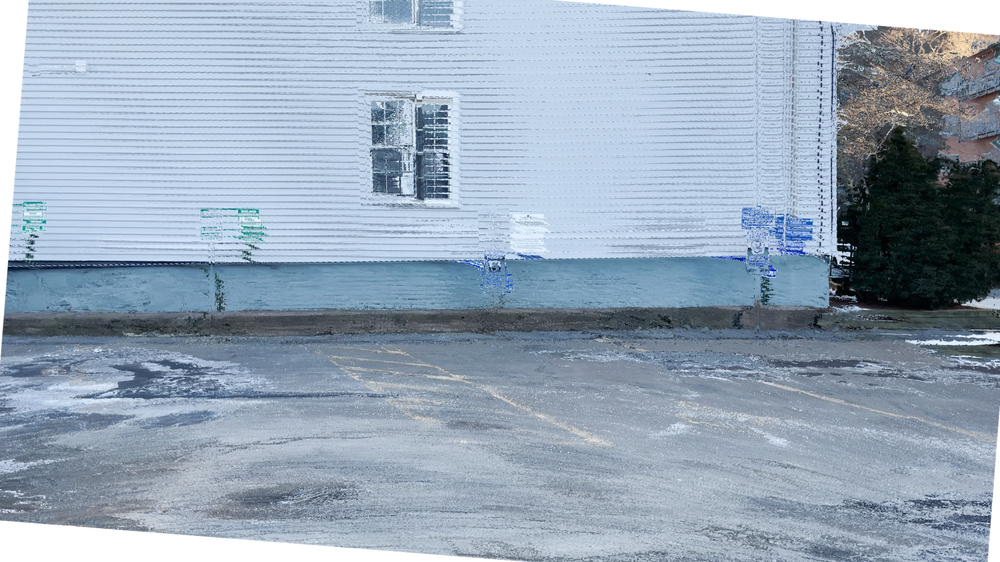
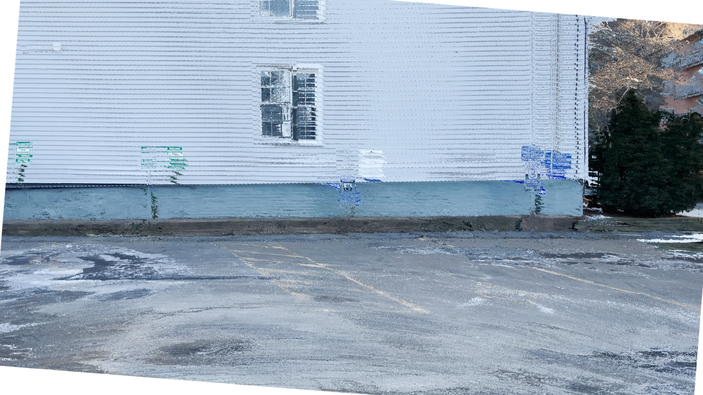

When I look into the past, fragments of memory appear to me always as if
obscured by a veil of dust. Put together, these fragments form a long
gray river winding through my mind.
Each of us floats in our own river of memory, carried forward by the current of time yet clinging to the fragments that we do not want to let go. The endless flow in which we are entangled witnesses the fragments being broken up, rearranged, and merged again. Some of them are slapped ashore and left behind; some are smashed into droplets and blend into others. Thus, the river keeps changing while we keep moving forward.
Each of us floats in our own river of memory, carried forward by the current of time yet clinging to the fragments that we do not want to let go. The endless flow in which we are entangled witnesses the fragments being broken up, rearranged, and merged again. Some of them are slapped ashore and left behind; some are smashed into droplets and blend into others. Thus, the river keeps changing while we keep moving forward.